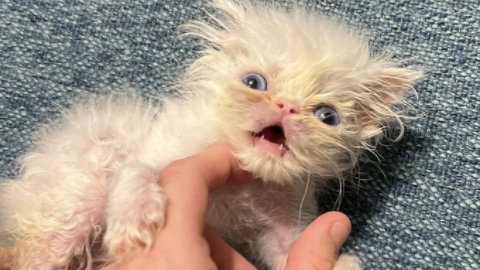

Meet Wisp, the ‘Scrungly’
Persian Kitten

Fact: Wisp has gained almost 800,000 followers and over 50 million likes on TikTok.
Rags to Riches Animal Rescue Inc. Received a sweet surprise after taking in a Persian cat, Gerald. On July 24th, 2023, RTRARI made a post on Instagram with the caption "Apparently Gerald has been keeping a big secret from us! We were told male and neutered well… that’s not the case" And little wisp was born!